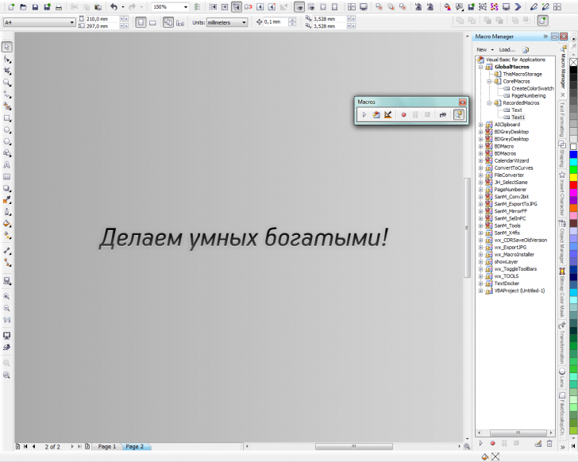
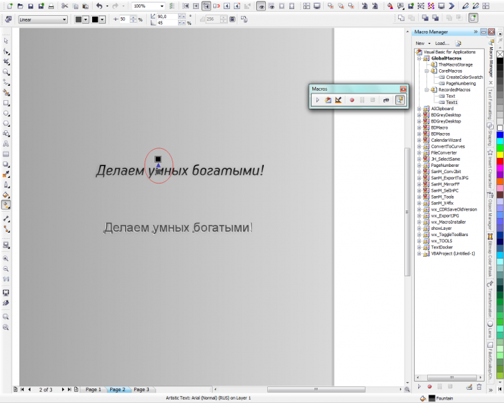

Zigzain / 08.03.2012, 23:29/00:41
Вопрос таков: записал макрос на создание вот такого текста

При использовании его для другого текста, градиентная заливка привязывается к исходному месту, где была сделана при записи, а не к объекту. Как сделать, чтоб заливка была привязана к объекту? Та же фигня и с прозрачностью кстати...

Zigzain, вообще то при подобного рода вопросах принято показывать код, а не скриншоты всего корела.
Если это там, где Edit, то вот код:
' Recorded 08.03.2012
' Recording of this command is not supported: TextEdit
' Recording of this command is not supported: TextEdit
' Recording of this command is not supported: TextEdit
Windows.FindWindow("Untitled-1").ActiveView.SetViewPoint 0.873217, 10.142165, 300
Windows.FindWindow("Untitled-1").ActiveView.SetViewPoint 0.977382, 10.326193, 600
Windows.FindWindow("Untitled-1").ActiveView.SetViewPoint 1.032941, 10.209874, 1200
Windows.FindWindow("Untitled-1").ActiveView.SetViewPoint 1.03728, 10.210744, 2400
Windows.FindWindow("Untitled-1").ActiveView.SetViewPoint 1.037717, 10.210744, 4800
Windows.FindWindow("Untitled-1").ActiveView.SetViewPoint 1.044224, 10.207272, 9600
Windows.FindWindow("Untitled-1").ActiveView.SetViewPoint 1.045197, 10.198701, 4800
Windows.FindWindow("Untitled-1").ActiveView.SetViewPoint 1.046724, 10.196957, 2400
Windows.FindWindow("Untitled-1").ActiveView.SetViewPoint 1.046291, 10.213449, 1200
Windows.FindWindow("Untitled-1").ActiveView.SetViewPoint 1.056709, 10.214315, 600
Windows.FindWindow("Untitled-1").ActiveView.SetViewPoint 1.304976, 10.301122, 300
Windows.FindWindow("Untitled-1").ActiveView.SetViewPoint 1.388319, 10.155283, 600
With ActiveLayer.Shapes(1).Fill.ApplyFountainFill(CreateRGBColor(0, 0, 0), CreateCMYKColor(0, 0, 0, 0), cdrLinearFountainFill, 270#, 0, 0, 50, cdrDirectFountainFillBlend)
.StartX = 1.313669
.StartY = 10.271606
.EndX = 1.313669
.EndY = 10.054591
End With
With ActiveLayer.Shapes(1).Fill.ApplyFountainFill(CreateRGBColor(0, 0, 0), CreateCMYKColor(0, 0, 0, 0), cdrLinearFountainFill, 270#, 0, 17, 50, cdrDirectFountainFillBlend)
.StartX = 1.313669
.StartY = 10.271606
.EndX = 1.313669
.EndY = 10.198421
End With
With ActiveLayer.Shapes(1).Fill.ApplyFountainFill(CreateRGBColor(0, 0, 0), CreateRGBColor(153, 153, 153), cdrLinearFountainFill, 270#, 0, 30, 50, cdrDirectFountainFillBlend)
.StartX = 1.313669
.StartY = 10.271606
.EndX = 1.313669
.EndY = 10.198421
End With
With ActiveLayer.Shapes(1).Fill.ApplyFountainFill(CreateRGBColor(0, 0, 0), CreateRGBColor(128, 128, 128), cdrLinearFountainFill, 270#, 0, 30, 50, cdrDirectFountainFillBlend)
.StartX = 1.313669
.StartY = 10.271606
.EndX = 1.313669
.EndY = 10.198421
End With
With ActiveLayer.Shapes(1).Fill.ApplyFountainFill(CreateRGBColor(0, 0, 0), CreateRGBColor(102, 102, 102), cdrLinearFountainFill, 270#, 0, 30, 50, cdrDirectFountainFillBlend)
.StartX = 1.313669
.StartY = 10.271606
.EndX = 1.313669
.EndY = 10.198421
End With
With ActiveLayer.Shapes(1).Fill.ApplyFountainFill(CreateRGBColor(0, 0, 0), CreateRGBColor(102, 102, 102), cdrLinearFountainFill, 270#, 0, 30, 50, cdrDirectFountainFillBlend)
.StartX = 1.110543
.StartY = 10.328898
.EndX = 1.110543
.EndY = 10.198421
End With
Windows.FindWindow("Untitled-1").ActiveView.SetViewPoint 1.101862, 10.306327, 1200
Windows.FindWindow("Untitled-1").ActiveView.SetViewPoint 1.105335, 10.316744, 2400
With ActiveLayer.Shapes(1).Fill.ApplyFountainFill(CreateRGBColor(0, 0, 0), CreateRGBColor(102, 102, 102), cdrLinearFountainFill, 270#, 0, 1, 50, cdrDirectFountainFillBlend)
.StartX = 1.110543
.StartY = 10.326728
.EndX = 1.110543
.EndY = 10.198421
End With
Windows.FindWindow("Untitled-1").ActiveView.SetViewPoint 1.122697, 10.32152, 1200
Windows.FindWindow("Untitled-1").ActiveView.SetViewPoint 1.122689, 10.321516, 600
Windows.FindWindow("Untitled-1").ActiveView.SetViewPoint 1.204291, 10.307618, 300
Windows.FindWindow("Untitled-1").ActiveView.SetViewPoint 1.263327, 10.186083, 600
' Recording of this command is not supported: TextEdit
Dim s1 As Shape
Set s1 = ActiveLayer.Shapes(1).Duplicate
ActiveDocument.ReferencePoint = cdrBottomMiddle
s1.Stretch 1#, -1#
s1.OrderToFront
ActiveDocument.ReferencePoint = cdrTopMiddle
s1.Stretch 1#, -1#
s1.OrderFrontOf ActiveLayer.Shapes(25)
s1.Fill.UniformColor.RGBAssign 255, 255, 255
s1.Move 0#, -0.003937
Windows.FindWindow("Untitled-1").ActiveView.SetViewPoint 0.976866, 10.319764, 300
Windows.FindWindow("Untitled-1").ActiveView.SetViewPoint 1.188681, 10.326709, 150
Windows.FindWindow("Untitled-1").ActiveView.SetViewPoint 1.369244, 9.812819, 75
Windows.FindWindow("Untitled-1").ActiveView.SetViewPoint 4.216465, 9.965594, 150
Dim eff1 As Effect
Set eff1 = s1.CreateDropShadow(cdrDropShadowFlat, 11, 27, 0#, 0#, CreateRGBColor(0, 0, 0), cdrFeatherAverage, cdrEdgeLinear, MergeMode:=cdrMergeNormal)
Windows.FindWindow("Untitled-1").ActiveView.ZoomIn
Windows.FindWindow("Untitled-1").ActiveView.SetViewPoint 2.978618, 9.960386, 150
Windows.FindWindow("Untitled-1").ActiveView.SetViewPoint 2.548059, 10.092335, 75
Windows.FindWindow("Untitled-1").ActiveView.SetViewPoint 0.534173, 10.050665, 150
Windows.FindWindow("Untitled-1").ActiveView.SetViewPoint 0.728614, 10.1965, 300
Windows.FindWindow("Untitled-1").ActiveView.SetViewPoint 1.31889, 10.425665, 600
Set eff1 = s1.CreateDropShadow(cdrDropShadowFlat, 4, 27, 0#, 0#, CreateRGBColor(0, 0, 0), cdrFeatherAverage, cdrEdgeLinear, MergeMode:=cdrMergeNormal)
ActiveDocument.Undo
Set eff1 = s1.CreateDropShadow(cdrDropShadowFlat, 9, 27, 0#, 0#, CreateRGBColor(0, 0, 0), cdrFeatherAverage, cdrEdgeLinear, MergeMode:=cdrMergeNormal)
Set eff1 = s1.CreateDropShadow(cdrDropShadowFlat, 9, 22, 0#, 0#, CreateRGBColor(0, 0, 0), cdrFeatherAverage, cdrEdgeLinear, MergeMode:=cdrMergeNormal)
Windows.FindWindow("Untitled-1").ActiveView.SetViewPoint 1.324102, 10.470807, 300
Windows.FindWindow("Untitled-1").ActiveView.SetViewPoint 1.428264, 9.859693, 150
Windows.FindWindow("Untitled-1").ActiveView.SetViewPoint 1.282433, 10.213858, 400
End Sub
Sub Text1()
' Recorded 08.03.2012
Dim OrigSelection As ShapeRange
Set OrigSelection = ActiveSelectionRange
Windows.FindWindow("Untitled-1").ActiveView.SetViewPoint 2.839079, 6.21485, 200
' Recording of this command is not supported: TextEdit
' Recording of this command is not supported: TextEdit
With ActiveSelection.Fill.ApplyFountainFill(CreateRGBColor(77, 77, 77), CreateCMYKColor(0, 0, 0, 0), cdrLinearFountainFill, 90#, 0, 0, 50, cdrDirectFountainFillBlend)
.StartX = 3.682469
.StartY = 6.395067
.EndX = 3.682469
.EndY = 6.728402
End With
With ActiveSelection.Fill.ApplyFountainFill(CreateRGBColor(77, 77, 77), CreateRGBColor(0, 0, 0), cdrLinearFountainFill, 90#, 0, 4, 50, cdrDirectFountainFillBlend)
.StartX = 3.682469
.StartY = 6.395067
.EndX = 3.682469
.EndY = 6.728402
End With
Windows.FindWindow("Untitled-1").ActiveView.SetViewPoint 3.693244, 6.332909, 100
Windows.FindWindow("Untitled-1").ActiveView.SetViewPoint 3.832138, 6.305126, 50
Windows.FindWindow("Untitled-1").ActiveView.SetViewPoint 2.998799, 6.721783, 100
Windows.FindWindow("Untitled-1").ActiveView.SetViewPoint 3.846016, 6.263457, 50
Windows.FindWindow("Untitled-1").ActiveView.SetViewPoint 4.346028, 7.291228, 100
Windows.FindWindow("Untitled-1").ActiveView.SetViewPoint 4.443252, 6.694008, 50
Dim eff1 As Effect
Set eff1 = OrigSelection(1).CreateDropShadow(cdrDropShadowFlat, 11, 27, 0#, 0#, CreateRGBColor(0, 0, 0), cdrFeatherAverage, cdrEdgeLinear, MergeMode:=cdrMergeNormal)
Windows.FindWindow("Untitled-1").ActiveView.SetViewPoint 0.276591, 4.388449, 100
Windows.FindWindow("Untitled-1").ActiveView.SetViewPoint 4.109925, 6.263445, 200
Windows.FindWindow("Untitled-1").ActiveView.SetViewPoint 4.109929, 6.263449, 100
Windows.FindWindow("Untitled-1").ActiveView.SetViewPoint 4.151598, 6.541217, 50
ActiveDocument.Undo
Windows.FindWindow("Untitled-1").ActiveView.SetViewPoint 3.346055, 7.374559, 100
Dim dup1 As ShapeRange
Set dup1 = OrigSelection.Duplicate
ActiveDocument.ReferencePoint = cdrBottomMiddle
dup1.Stretch 1#, -1#
dup1.OrderToFront
ActiveDocument.ReferencePoint = cdrTopMiddle
dup1.Stretch 1#, -1#
dup1.OrderFrontOf ActiveLayer.Shapes(3)
dup1.Move 0#, -0.000898
dup1.ApplyUniformFill CreateRGBColor(255, 255, 255)
Windows.FindWindow("Untitled-1").ActiveView.SetViewPoint 3.65161, 6.485677, 200
Windows.FindWindow("Untitled-1").ActiveView.SetViewPoint 3.644665, 6.499567, 400
Windows.FindWindow("Untitled-1").ActiveView.SetViewPoint 3.682862, 6.437067, 800
Windows.FindWindow("Untitled-1").ActiveView.SetViewPoint 3.681126, 6.430122, 400
Windows.FindWindow("Untitled-1").ActiveView.SetViewPoint 3.674189, 6.41276, 200
Windows.FindWindow("Untitled-1").ActiveView.SetViewPoint 3.674197, 6.412764, 100
Windows.FindWindow("Untitled-1").ActiveView.SetViewPoint 3.757531, 6.468315, 200
Windows.FindWindow("Untitled-1").ActiveView.SetViewPoint 3.688087, 6.36415, 400
dup1.Move 0#, -0.006941
Windows.FindWindow("Untitled-1").ActiveView.SetViewPoint 3.438087, 6.35026, 200
Windows.FindWindow("Untitled-1").ActiveView.SetViewPoint 3.597819, 6.246094, 100
ActiveDocument.Undo
Windows.FindWindow("Untitled-1").ActiveView.SetViewPoint 3.389484, 6.315535, 200
Windows.FindWindow("Untitled-1").ActiveView.SetViewPoint 3.486705, 6.232201, 400
Windows.FindWindow("Untitled-1").ActiveView.SetViewPoint 3.601287, 6.426642, 800
Windows.FindWindow("Untitled-1").ActiveView.SetViewPoint 3.57872, 6.417965, 400
Windows.FindWindow("Untitled-1").ActiveView.SetViewPoint 3.568303, 6.407539, 200
Windows.FindWindow("Untitled-1").ActiveView.SetViewPoint 3.568303, 6.407539, 100
ActiveDocument.Redo
Windows.FindWindow("Untitled-1").ActiveView.SetViewPoint 1.804417, 5.72698, 50
Windows.FindWindow("Untitled-1").ActiveView.SetViewPoint 2.387748, 4.782528, 25
Windows.FindWindow("Untitled-1").ActiveView.SetViewPoint 1.221079, 7.11585, 50
Windows.FindWindow("Untitled-1").ActiveView.SetViewPoint 1.387744, 7.171406, 100
Windows.FindWindow("Untitled-1").ActiveView.SetViewPoint 3.512744, 6.601961, 50
Dim eff2 As Effect
Set eff2 = dup1(1).CreateDropShadow(cdrDropShadowFlat, 11, 27, 0#, 0#, CreateRGBColor(0, 0, 0), cdrFeatherAverage, cdrEdgeLinear, MergeMode:=cdrMergeNormal)
Windows.FindWindow("Untitled-1").ActiveView.SetViewPoint 2.151634, 6.074173, 100
Windows.FindWindow("Untitled-1").ActiveView.SetViewPoint 2.457189, 6.074173, 200
Windows.FindWindow("Untitled-1").ActiveView.SetViewPoint 1.019685, 6.456118, 100
End Sub
Sub Text2()
' Recorded 08.03.2012
Dim OrigSelection As ShapeRange
Set OrigSelection = ActiveSelectionRange
ActiveSelection.ApplyStyle "New Artistic Text"
Windows.FindWindow("Untitled-1").ActiveView.SetViewPoint 3.948512, 9.513437, 200
OrigSelection.ApplyUniformFill CreateRGBColor(102, 102, 102)
With ActiveSelection.Fill.ApplyFountainFill(CreateRGBColor(102, 102, 102), CreateCMYKColor(0, 0, 0, 0), cdrLinearFountainFill, 270#, 0, 0, 50, cdrDirectFountainFillBlend)
.StartX = 4.438098
.StartY = 9.471772
.EndX = 4.438098
.EndY = 8.971772
End With
With ActiveSelection.Fill.ApplyFountainFill(CreateRGBColor(102, 102, 102), CreateRGBColor(102, 102, 102), cdrLinearFountainFill, 270#, 0, 0, 50, cdrDirectFountainFillBlend)
.StartX = 4.438098
.StartY = 9.471772
.EndX = 4.438098
.EndY = 8.971772
End With
With ActiveSelection.Fill.ApplyFountainFill(CreateRGBColor(102, 102, 102), CreateRGBColor(51, 51, 51), cdrLinearFountainFill, 270#, 0, 0, 50, cdrDirectFountainFillBlend)
.StartX = 4.438098
.StartY = 9.471772
.EndX = 4.438098
.EndY = 8.971772
End With
With ActiveSelection.Fill.ApplyFountainFill(CreateRGBColor(102, 102, 102), CreateRGBColor(0, 0, 0), cdrLinearFountainFill, 270#, 0, 0, 50, cdrDirectFountainFillBlend)
.StartX = 4.438098
.StartY = 9.471772
.EndX = 4.438098
.EndY = 8.971772
End With
With ActiveSelection.Fill.ApplyFountainFill(CreateRGBColor(102, 102, 102), CreateRGBColor(0, 0, 0), cdrLinearFountainFill, 270#, 0, 0, 50, cdrDirectFountainFillBlend)
.StartX = 4.438098
.StartY = 9.336354
.EndX = 4.438098
.EndY = 8.971772
End With
With ActiveSelection.Fill.ApplyFountainFill(CreateRGBColor(102, 102, 102), CreateRGBColor(0, 0, 0), cdrLinearFountainFill, 269.118545, 0, 21, 50, cdrDirectFountainFillBlend)
.StartX = 4.776642
.StartY = 9.482189
.EndX = 4.771433
.EndY = 9.143646
End With
With ActiveSelection.Fill.ApplyFountainFill(CreateRGBColor(102, 102, 102), CreateRGBColor(0, 0, 0), cdrLinearFountainFill, 90#, 0, 12, 50, cdrDirectFountainFillBlend)
.StartX = 4.938098
.StartY = 9.10198
.EndX = 4.938098
.EndY = 9.466563
End With
Windows.FindWindow("Untitled-1").ActiveView.SetViewPoint 2.93289, 9.383228, 100
Windows.FindWindow("Untitled-1").ActiveView.SetViewPoint 4.630807, 9.633228, 200
Dim dup1 As ShapeRange
Set dup1 = OrigSelection.Duplicate
ActiveDocument.ReferencePoint = cdrBottomMiddle
dup1.Stretch 1#, -1#
dup1.OrderToFront
ActiveDocument.ReferencePoint = cdrTopMiddle
dup1.Stretch 1#, -1#
dup1.OrderFrontOf ActiveLayer.Shapes(9)
dup1.Move 0#, -0.01389
Windows.FindWindow("Untitled-1").ActiveView.SetViewPoint 4.896429, 8.784272, 100
dup1.ApplyUniformFill CreateRGBColor(255, 255, 255)
Windows.FindWindow("Untitled-1").ActiveView.SetViewPoint 2.53185, 6.596768, 200
dup1.Move 0#, 0.01389
dup1.Move 0#, -0.01389
Windows.FindWindow("Untitled-1").ActiveView.SetViewPoint 3.787055, 8.487394, 100
Windows.FindWindow("Untitled-1").ActiveView.SetViewPoint 3.787055, 8.445728, 50
Windows.FindWindow("Untitled-1").ActiveView.SetViewPoint 3.766228, 8.445724, 25
Windows.FindWindow("Untitled-1").ActiveView.SetViewPoint 4.807902, 10.404059, 50
Windows.FindWindow("Untitled-1").ActiveView.SetViewPoint 4.891232, 8.279059, 100
Windows.FindWindow("Untitled-1").ActiveView.SetViewPoint 4.484988, 9.581146, 200
ActiveDocument.Undo
Windows.FindWindow("Untitled-1").ActiveView.SetViewPoint 4.469362, 9.37802, 400
dup1.Move 0#, -0.01389
dup1.Move 0#, 0.006945
Windows.FindWindow("Untitled-1").ActiveView.SetViewPoint 4.766236, 9.310311, 200
Windows.FindWindow("Untitled-1").ActiveView.SetViewPoint 4.750614, 9.310315, 100
Dim eff1 As Effect
Set eff1 = dup1(1).CreateDropShadow(cdrDropShadowFlat, 11, 27, 0#, 0#, CreateRGBColor(0, 0, 0), cdrFeatherAverage, cdrEdgeLinear, MergeMode:=cdrMergeNormal)
Windows.FindWindow("Untitled-1").ActiveView.SetViewPoint 4.771445, 8.591559, 200
Windows.FindWindow("Untitled-1").ActiveView.SetViewPoint 4.115197, 9.601976, 400
Dim dup2 As ShapeRange
Set dup2 = OrigSelection.Duplicate
ActiveDocument.ReferencePoint = cdrBottomMiddle
dup2.Stretch 1#, -1#
dup2.OrderToFront
Windows.FindWindow("Untitled-1").ActiveView.SetViewPoint 4.401657, 8.935311, 200
dup2.ApplyUniformFill CreateRGBColor(255, 255, 255)
Windows.FindWindow("Untitled-1").ActiveView.SetViewPoint 3.120402, 8.805098, 100
Windows.FindWindow("Untitled-1").ActiveView.SetViewPoint 4.797488, 9.034264, 200
ActiveDocument.Undo
dup2.CreateSelection
With ActiveSelection.Transparency.ApplyFountainTransparency(0, 100, cdrLinearFountainFill, 270#, 256, 0, 50)
.StartX = 4.818323
.StartY = 9.409264
.EndX = 6.530921
.EndY = 8.711346
End With
With ActiveSelection.Transparency.ApplyFountainTransparency(0, 100, cdrLinearFountainFill, 270#, 256, 0, 50)
.StartX = 4.818323
.StartY = 10.294681
.EndX = 6.530921
.EndY = 8.711346
End With
With ActiveSelection.Transparency.ApplyFountainTransparency(0, 100, cdrLinearFountainFill, 270#, 256, 0, 50)
.StartX = 4.818323
.StartY = 10.294681
.EndX = 6.530921
.EndY = 8.851972
End With
With ActiveSelection.Transparency.ApplyFountainTransparency(0, 100, cdrLinearFountainFill, 270#, 256, 4, 50)
.StartX = 4.818323
.StartY = 11.247807
.EndX = 6.530921
.EndY = 8.851972
End With
Windows.FindWindow("Untitled-1").ActiveView.SetViewPoint 4.901654, 9.456138, 100
dup2.Move 0#, -0.02778
dup2.Move 0#, -0.02778
dup2.Move 0#, -0.02778
dup2.Move 0#, -0.02778
dup2.Move 0#, -0.02778
End Sub
Глядя на скриншоты с Макрос Менеджером чуствую свою убогость -- неужто автор темы их все пользует... O_o
Zigzain, заглянул под спойлер и увидел ужас :D
Проблема в том что запись макросов в 99% случаев можно использовать только как справочник, и то не всегда. Советую изучить этот код, что бы понять что именно тебе нужно будет писать в нормальном макросе.
Я его изучил. Возможно дело как раз в применении заливки относительно координат системы, а не самого объекта? как сделать заливку, привязанную именно к объекту?
Zigzain, брать координаты самого объекта, а затем относительно их задавать координаты для узлов градиента. Вот простой пример: